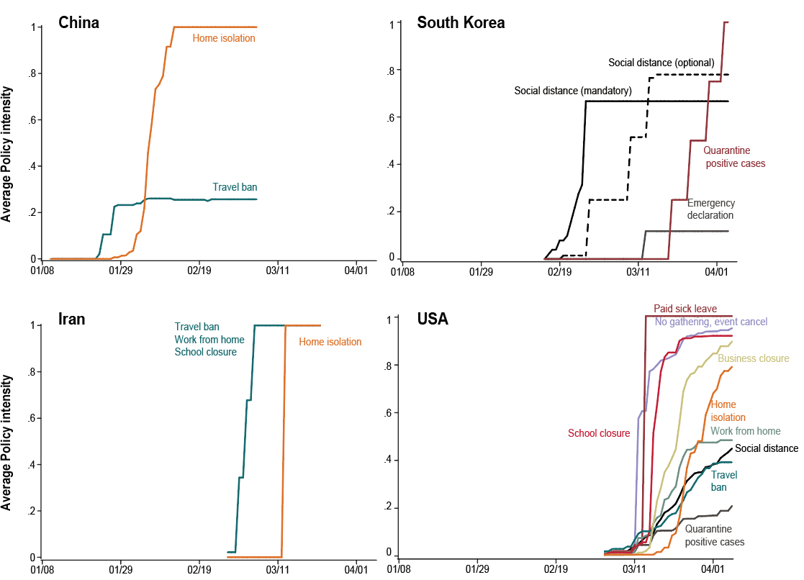

We compiled at the
Global Policy Lab a set of 1,400+ anti-contagion policies deployed at the local and national level in China, France, Iran, Italy, South Korea, and the US. We leveraged this data to assess the effectiveness of different policies in slowing the spread of COVID-19. See the
publication in Nature for more information.
